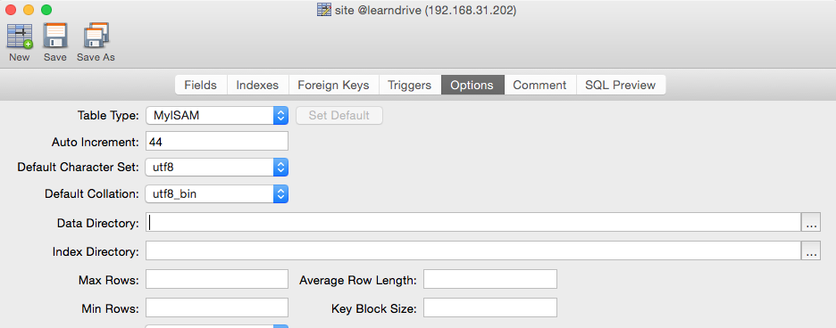

说明
本文不对mysql的地理空间使用做深入剖析，只是针对这几天对其的使用做一个教程记录.本文的操作工具是navicat
创建地理空间数据表
要使用空间索引，表的类型要选择成MyISAM,貌似表的默认类型就是这个，但是有时候还是需要手动去改。如图

创建地理空间字段
在我使用的navicat版本里面，创建字段的时候，type一栏里并没有关于地理空间的类型，需要手动输入.常用的类型有：
- GEOMETRY
- POINT
- LINESTRING
- POLYGON
- MULTIPOINT
- MULTILINESTRING
- MULTIPOLYGON
- MULTIPOLYGON
连接数据库需要注意
使用以下方式连接.
1 | mysql -h 192.168.31.202 -u root -p -D learndrive #learndrive是数据库的名称 |
创建地理空间索引
在navicat里面无法直接创建SPATIAL索引，需要到shell里用命令行创建.
1 | CREATE SPATIAL INDEX sp_index ON site (location); #site是表，location是空间字段 |
连接上mysql之后，直接用上面的代码创建索引，很可能会报错（是对已有的表创建索引造成）
1 | ERROR 1416 (22003): Cannot get geometry object from data you send to the GEOMETRY field |
先把地理空间字段的值对边填一个
1 | UPDATE `site` SET `location` = POINT( 0,0 ); #site是表，location是空间字段 |
然后再创建索引.